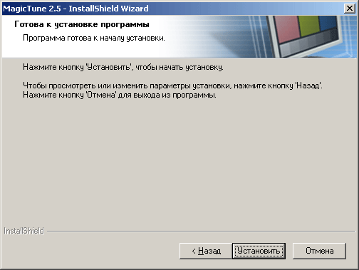
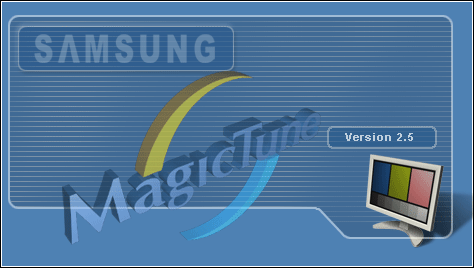

- Вставьте инсталляционный компакт-диск в привод для компакт-дисков (CD-ROM).
- лкните на инсталляционном файле MagicTune.
- Выберите язык установки, затем щелкните мышью на кнопке Далее.
- После появления окна мастера установки InstallShield Wizard щелкните мышью на кнопке Далее.
- Если вы согласны с условиями использования программы, выберите Я принимаю условия лицензионного соглашения.
- Выберите папку для установки программы MagicTune.
- лкните на Установить.

- Появится диалоговое окно Состояние установк.
- лкните на Готово.
- После завершения установки на рабочем столе компьютера появится значок запуска программы MagicTune 2.5.
 Для запуска программы сделайте двойной щелчок на значке. Для запуска программы сделайте двойной щелчок на значке.
|

|
 |
В зависимости от особенностей системы компьютера или монитора, значок программы MagicTune может отображаться или не отображаться.
Если он не отображается, нажмите клавишу F5.
|
|
|
- Если установка выполнена успешно, появится показанное ниже окно.

- Показанное ниже сообщение об ошибке указывает на то, что используемая системой видеокарта не поддерживается программой MagicTune.

|
Проблемы в ходе
установки MagicTune 2.5 могут быть связаны с
такими факторами, как используемые видеокарта или материнская плата и сетевое
окружение компьютера.
В случае возникновения проблем в ходе установки см.
раздел "Устранение неполадок".
Операционные
системы
- Windows 98 SE
- Windows Me
- Windows NT
- Windows 2000
- Windows XP Home Edition
- Windows XP Professional
Аппаратные
средства
- Оперативная
память: 32 Мбайт или более
- Свободное пространство на жестком диске: 25 Мбайт или более
* Более
подробные сведения см. на веб-сайте MagicTune.
|

 Требования к
системе
Требования к
системе Установка
Установка